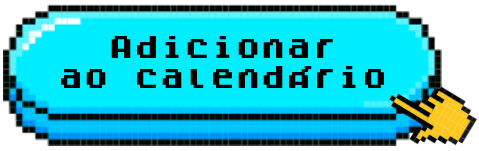

Bem-vindo(a)
Você está prestes a viver uma experiência única no coração do Chile.
Este espaço reúne todas as informações que você precisa antes e durante a viagem. Confira os principais destaques da programação e prepare-se para aproveitar cada momento dessa missão incrível!

Checklist antes de embarcar
Para que sua viagem ocorra sem imprevistos, confira se
você já está com tudo em mãos:
- Documento de viagem (passaporte/RG válido)
- Cartão internacional e ou pesos chilenos
- Seguro viagem (opcional/não incluso)
- Check-in diretamente no guichê da Latam
- Mala de mão/bordo de até 10kg permitida.
Despacho de bagagem superior a
10kg é opcional/não incluso.
Bagagem: O que pode e o que não pode
Evite problemas no embarque seguindo essas regras:
🧳Mala de mão: Líquidos, géis e cremes até 100ml, em embalagens transparentes dentro de um saquinho zip transparente.
🧴Acima de 100 ml: apenas em bagagem despachada.
📦Bagagem despachada: não incluída na Missão. Caso precise despachar, contrate antecipadamente no site da LATAM para aproveitar condições especiais ou pague direto no guichê da companhia no momento do check-in.
Seu cronograma de viagem
Confira os horários dos seus voos, se organize para chegar com pelo menos 3 horas antecedência e garanta um embarque tranquilo. Para este voo de ida, marcado às 10h30 (horário de Brasília), recomenda-se chegar ao Aeroporto internacional de Guarulhos até 07h30.
Embarque - Guarulhos:
05/11/2025 - às 10h30
(Horário de Brasília)Chegada - Santiago:
05/11/2025 - às 14h50
(Horário de Brasília)Retorno ao Brasil:
07/11/2025 - às 21h30
(Horário de Brasília)Por isso, não haverá diferença de horário entre Brasil e Santiago — os relógios estarão iguais.
Dicas para curtir sem preocupações
💵 Moeda e pagamentos
Tenha alguns pesos + cartão internacional.
A moeda oficial do Chile é o Peso Chileno (CLP). Para pequenas despesas iniciais, recomendamos levar um pouco em espécie. Para compras maiores, os cartões internacionais são aceitos na maior parte dos estabelecimentos.
• Câmbio: Casas de câmbio no Aeroporto de Santiago e no centro da cidade.
• Saques: Caixas eletrônicos (Redbanc) aceitam cartões internacionais.
• Cartões: Visa, Mastercard e outros são amplamente aceitos. Não esqueça de desbloquear antes da viagem a função de compras no exterior no app do seu banco para não ter surpresas na hora de pagar.
• Opções adicionais: Bancos digitais como Wise, Nomad, C6 Global e Nubank Ultravioleta oferecem contas ou cartões em moeda estrangeira que convertem automaticamente reais em pesos chilenos, com taxas competitivas.
• Pagamentos digitais: Apple Pay, Google Pay e Mercado Pago funcionam em muitos lugares.
🔌Adaptador, Voltagem e Celular
Tomadas tipo C/L - 220V.
No Chile, a voltagem é de 220V e as tomadas são do tipo C e L (dois ou três pinos redondos). Leve um adaptador universal para evitar imprevistos.
• Voltagem: 220V (a maioria dos aparelhos bivolt funcionam).
• Tomadas: Tipo C (dois pinos redondos) e L (três pinos finos).
• Celular: Consulte seu plano para habilitar roaming internacional ou compre um chip local (SIM pré-pago) ao chegar em Santiago. Essa é uma opção econômica para ter internet e ligações durante a viagem.
🆘 Seguro & Emergências
Seguro opcional. Não incluído.
O seguro viagem não está incluso nesta missão. Se você já contratou um seguro por conta própria, mantenha as informações principais em um local de fácil acesso.
O que ter em mãos se você tiver seguro viagem próprio:
• Dados da apólice: Nome da seguradora, número da apólice e telefone de assistência 24h.
• Contato de emergência da seguradora: Salve no celular e leve anotado com seus documentos.
Telefones de emergência no Chile:
• Polícia: 133
• Ambulância: 131
• Bombeiros: 132
(Esses números funcionam em todo o território chileno)
Programação da Missão em Santiago
Veja tudo o que preparamos para você. Clique nos dias para abrir os detalhes.